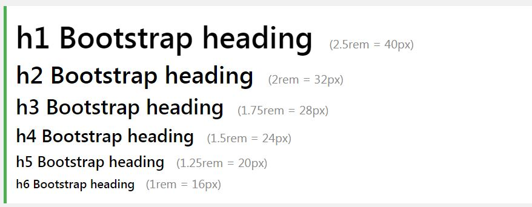

## 什麼是Bootstrap？
- 一個前端元件庫（library）。 - 用於開發 HTML、CSS 和 JS 的開源工具包。 - 以移動裝置為優先設計。
## 為何存在?
1. 為了加快前端設計的開發 2. 支援所有遊覽器CSS的文法 3. 有效的提升開發響應時網頁的效率
## 優缺點?
優點| 缺點 -|- 開發速度|代碼衝突 簡單易學|代码的规则 视觉效果一致性|视觉效果一致性 對不擅長設計網頁者友好|兼容太早期的版本IE9<需要額外處理 栅格系统| 完善的文檔|## 其他類似?
- [Foundation Framework](https://foundation.zurb.com/) - [Pure CSS](https://purecss.io/) - [Gumby Framework](https://gumbyframework.com/) - [Materialize CSS](https://materializecss.com/)
## 響應式網頁設計
Responsive Web Design
無論使用者透過何種裝置瀏覽網頁，該網頁的顯示效果會依據螢幕尺寸 進行調整。
## 為何存在?
為了滿足用戶在不同大小的熒幕上體驗而規劃出這一套設計概念。
## 遊覽器?
主要大型的遊覽器都支援,但是IE只支援到10+的版本
## BS4 與前版本的差異?
BS3與BS4的*語法*和*樣式*會有一些差異和捨棄。 建議去翻閱[**更新紀錄**](http://bootstrap.hexschool.com/docs/4.0/migration/)
## 解決兼容性的問題?
- 正確呼叫遠端地址 - 針對瀏覽器的內容做標識（使用meta標籤調節瀏覽器的渲染方式) - [其他解決方案](https://tw.saowen.com/a/9ca6b87d075897ea07b87ef045578fa466b450c58f7eceddc44b387df0bbc079)
## 栅格系统
- 便於設計網頁的排版 - 響應時設計的主要核型之一
See the Pen BS4 by Hadwey (@haruhhiro) on CodePen.
## 內容
## 文字排版
